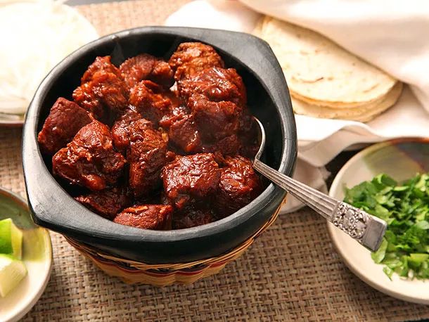

Adobada

Description
Adobada is a general term that refers to meat (often pork) that is marinated in a very thick, flavorful, chile-based mixture. When cooked in a hot pan—note, this is key, your pan needs to be hot— the meat will develop a delightfully charred, crisp exterior while maintaining a succulent interior.
Ingredients:
- 3 dried ancho chiles (about 3/4 oz.), stemmed and seeded
- 5 dried guajillo chiles (about 1 oz.), stemmed and seeded
- 1 fresh bay leaf
- 2 cups boiling water
- 6 garlic cloves, unpeeled
- ¼ cup apple cider vinegar
- 2 tablespoons soy sauce
- 1 teaspoon chopped fresh oregano
- 1 teaspoon chopped fresh thyme
- 1 teaspoon ground cumin
- 1 teaspoon honey
- 2 teaspoons kosher salt, divided
- 1 tablespoon tap water
- 1 ½ pounds pork shoulder, cut into 3/4-in. pieces
- 2 tablespoons canola oil
- Tomatillo salsa, queso fresco, pickled red onions, fresh cilantro leaves, lime wedges, for serving
Steps:
- Heat a large cast-iron skillet over medium. Tear ancho and guajillo chiles into flat pieces. Toast chiles, turning occasionally, until blistered and fragrant, about 4 minutes. Places toasted chile pieces and bay leaf in a medium bowl. Add boiling water, and let stand until softened, about 30 minutes. Drain, and discard liquid and bay leaf.
- Add garlic cloves to skillet. Cook over medium, stirring occasionally, until very soft and charred, about 10 minutes. Cool completely, and peel garlic cloves. Combine garlic, drained chiles, vinegar, soy sauce, oregano, thyme, cumin, honey, and 1 teaspoon of the salt in a high-powered blender. Process until smooth, adding 1 tablespoon tap water if necessary.
- Combine pork and chile mixture in a medium bowl. Toss to coat. Cover and chill 4 hours.
- Heat oil in a large cast-iron skillet over medium high. Place pork on a work surface lined with paper towels, and press with additional paper towels to remove excess marinade. Sprinkle pork evenly with remaining 1 teaspoon salt. Cook pork in a single layer, stirring occasionally, until lightly charred and cooked through, about 6 minutes. Serve in Tortillas de Harina with desired toppings.